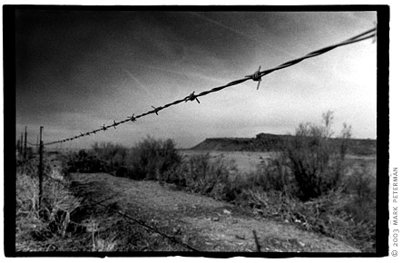

| 
|
saklý bir sevdadýr
bulduk sýðýndýk bu büyüylü bir aþk çünkü yasak gizli bir mutluluk ki ne söylesem az bin yýlda yaþasak hiç de yaþamasak varýmýz yoðumuz aþkýmýz artýk hayatým ona tutsak |
| sýðýndýðým tek þey bu yasak aþktý, beklerken,
pasiflik pozundayken içimde tek hissettiðim buydu. ama bu arada beklenilenler yerine yasaklar yaþayýnca çeþitli isyanlar ve sorgulamalara baþladým. |
|